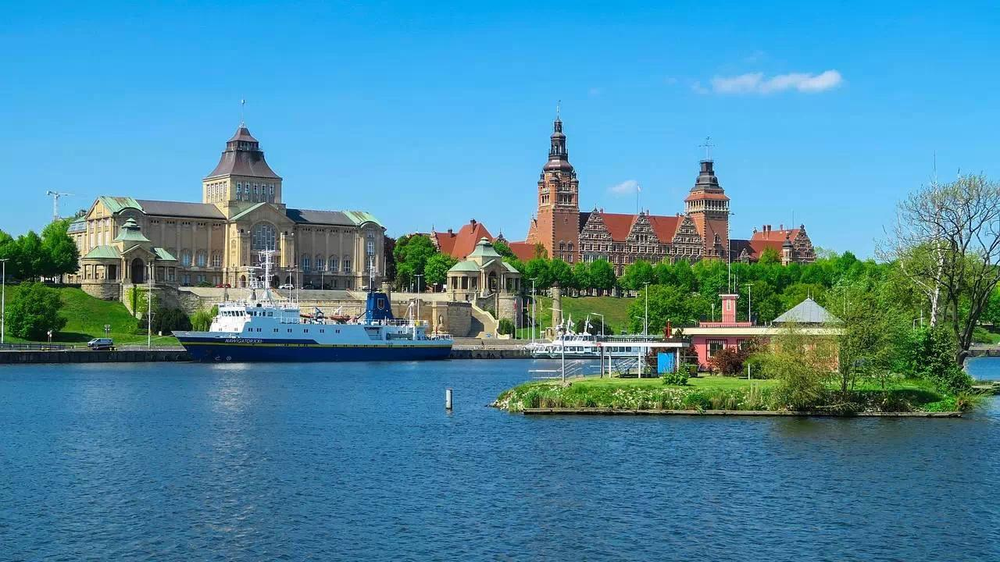

Pobyt Expert
Допомагаємо легально жити і працювати в Польщі

Наші послуги
Карта Побиту / Резидента / Громадянство
Апостиль / Дублікат документів / PESEL / Реєстрація авто / Права
Консультації та супровід
Чому нам довіряють?
Працюємо офіційно — підписуємо договір
Досвід у складних і нетипових ситуаціях
Прозорий супровід: ви знаєте, що, коли і чому відбувається
Допомога онлайн і офлайн
Консультації українською мовою